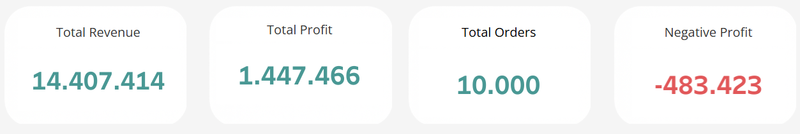
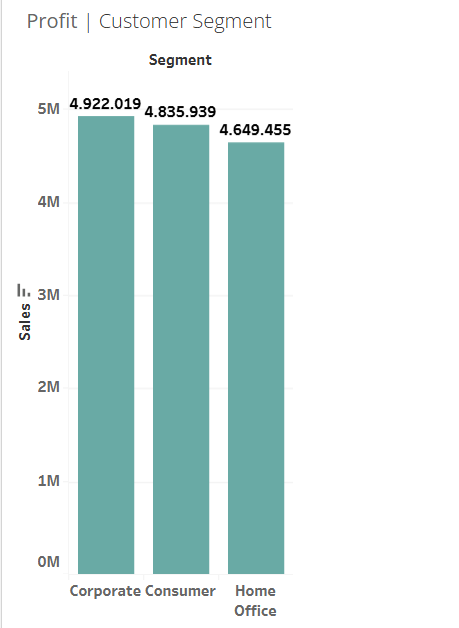
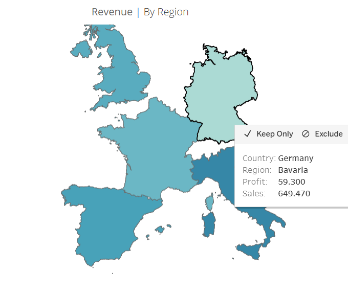
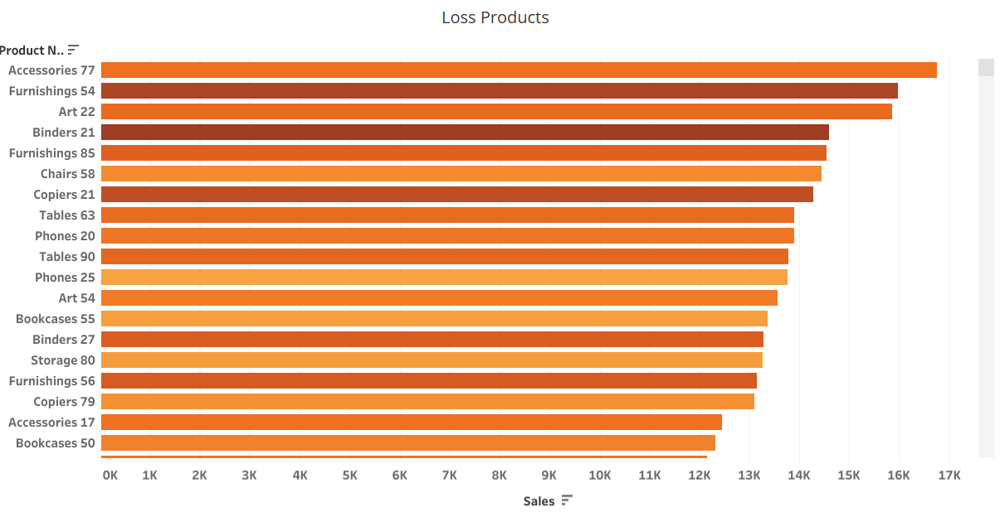

Retail Sales Performance - Europe Tableau Dashboard
Published: November 24, 2025

Tableau dashboard of retail sales performance across Europe.
Project Overview
This project focuses on developing a full-scale Retail Sales Performance Dashboard for a European retail dataset. The objective was to analyze key business metrics such as revenue, profit, customer distribution and product performance, and to design an interactive Tableau dashboard for business decision-making. Using a synthetic but realistic dataset of 10,000 European retail transactions, the project replicates the challenges faced by commercial analytics teams in sales-driven organizations.
Dataset
The dataset contains order information from multiple European countries, including:
- Country
- Region
- Customer Segment
- Order Date
- Shipment Date
- Sales
- Profit & Profit Margin
- Product Category & Sub-Category
Data is sourced and generated from ChatGPT, allowing the analysis of 10,000 in European retail sales transactions. The dataset was cleaned in Excel and modeled for Tableau, enabling performance analysis across time, customers, products, and regions.
Business Problem
Retail managers often deal with:
- Unclear visibility on profitable products
- Customer segments contributing differently
- Negative profit margins on certain categories
- Geographic regions underperforming
- Difficulty tracking KPIs over time
This project addresses these problems by providing insights and knowledge into executive-level view.
Objectives
The project aims to deliver:
- Build core KPIs
- Total Sales
- Total Profit
- Profit Margin
- Total Orders
- Total Customers
- Negative Profit
- Dashboard Visualizations
- Sales trends over time
- Profitability by Category
- Performance by Customer Segment
- Geographical insights across Europe
- Top 10 Products
- Profit & Loss Products
- Top 20 Customers
- Dashboard Design
Dashboard Features
- KPI Headers
A set of clear formatted KPI cards
- Total Profit: indicating the total profit earned.
- Profit Margin: showing the profit margin percentage.
- Total Orders: counting the total number of orders.
- Total Customers: counting the total number of customers.
- Negative Profit: highlighting areas with negative profit and profit loss.
- Sales Trends Monthly Sale trends illustrates how the sales fluctuate on a monthly basis. Observing peak seasons and declines
- Top Products A bar chart showcasing the top 10 products by sales, allowing quick identification of best-sellers and most profitable items.
- Profitability Analysis A breakdown of profit margins across different product categories, highlighting which categories are most profitable.
- Customer Segmentation Analysis of sales and profit by customer segments (Consumer, Corporate, Home Office), helping to identify which segments contribute most to revenue. 
- Geographical Insights A map visualization showing sales and profit distribution across different European countries, identifying revenue and profit by regions. 
- Top Customers A list of the top 20 customers by sales and quantity, enabling targeted marketing and relationship management.
- Negative Profit Products A bar chart listing products with negative profit, allowing for quick identification of loss-making items for further analysis. 


Tools Used
The following tools were used for project's analysis:
- Tableau Public
- Excel (data preparation, cleaning & check)
- ChatGPT (data generation)
- Github(project hosting)
Analysis & Findings
Key insights discovered from the dataset include:
- Technology is the most profitable and highest-selling category.
- Furniture shows mixed profit margins with several loss-making subcategories.
- A small set of customers contributes disproportionately to total profit.
- Germany, France, and the UK generate the highest revenue in Europe.
- Certain product lines have negative profit, indicating pricing or discount issues.
Conclusion
Overall, the analysis shows that Technology is the strongest-performing category with consistently high profit, while several Furniture and Office Supplies subcategories suffer from negative margins. Profitability also varies significantly across European regions, and a relatively small group of high-value customers contributes a large portion of total performance. To improve results, pricing and discount strategies should be re-evaluated for unprofitable products, top-performing markets should receive increased focus, and retention initiatives should be developed for the most valuable customers. Additionally, improving margin visibility across all product lines will help support better decision-making.